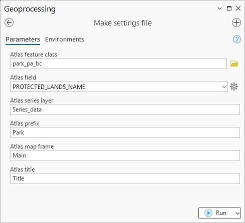
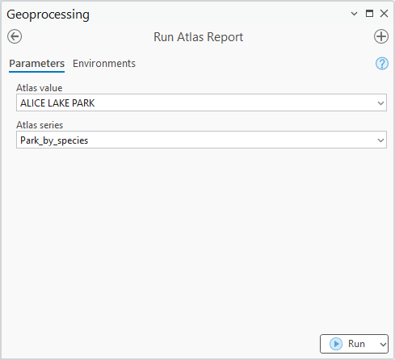
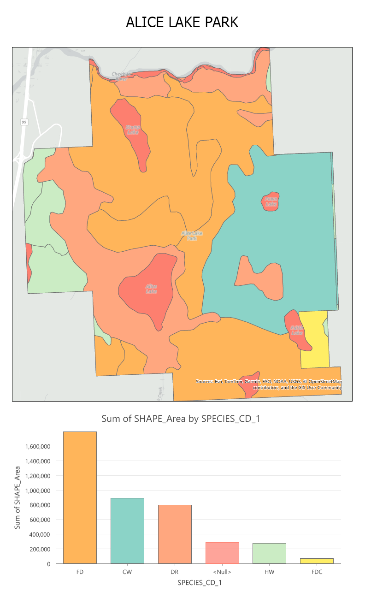

Python Toolbox for ArcGIS Pro
This project was part of a BCIT course focussed on Python scripting for ArcGIS Pro. The goal was to create two tools: one that automatically created a configuration file and another that used that file to create a PDF report. BC park and tree data were used in this assignment.
Link to full script: assignment_m09.pyt
Settings.json
The settings file is useful for avoiding hard coding and provides a simple way to ensure map and layout elements are correctly named so the next tool runs effectively. As can be seen the screenshot, the tool window allows the user to match the names of various ArcGIS Pro project items (e.g., feature classes, fields, and layout elements) with specific items in their particular project.
The block of code that writes these values to the settings file is fairly straightforward. It consists of retrieving the relevant parameters and using a search cursor to find every unique value in the specified field. Then, these key value pairs are written to the file.
def execute(self, parameters, messages):
# =============================================================
# Create dictionary to hold settings
# =============================================================
settings = {'version': 3.4}
# =============================================================
# Update settings with parameters
# =============================================================
settings.update({ __key_atlas_feature_class__ : parameters[0].valueAsText})
settings.update({ __key_atlas_field__ : parameters[1].valueAsText})
settings.update({ __key_atlas_series_layer__ : parameters[2].valueAsText})
settings.update({ __key_atlas_series_prefix__ : parameters[3].valueAsText})
settings.update({ __key_atlas_mapframe__ : parameters[4].valueAsText})
settings.update({ __key_atlas_title__ : parameters[5].valueAsText})
# =============================================================
# Update settings with unique field values
# =============================================================
value_list = []
with ap.da.SearchCursor(parameters[0].valueAsText, parameters[1].valueAsText) as cursor:
for row in cursor:
if not row[0] in value_list:
value_list.append(row[0])
value_list.sort()
settings.update({'atlas_values' : value_list})
# =============================================================
# Save settings to JSON file
# =============================================================
with open(__settings_file_name__, 'w') as settings_file:
js.dump(settings, settings_file)
return
The file then looks like this but with 930 atlas values:
{
"version": 3.4,
"atlas_feature_class": "park_vir.gdb\\park_pa_bc",
"atlas_field": "PROTECTED_LANDS_NAME",
"atlas_series_layer": "Series_data",
"atlas_prefix": "Park",
"atlas_mapframe": "Main",
"atlas_title": "Title",
"atlas_values": [
"ADAMS LAKE MARINE PARK - POPLAR POINT SITE",
"ADAMS LAKE MARINE PARK - REFUGE BAY SITE",
"ADAMS LAKE MARINE PARK - SPILLMAN BEACH SITE"
...
]
}
Run Atlas Report
Using the newly created settings file, the next tool modifies the specified layout and saves it as a PDF.
The next block of code retrieves the parameters and settings, changes the park name to make it SQL friendly, finds the extent of the selected park and sets the map frame extent accordingly, updates the layout title, and exports layout to PDF.
def execute(self, parameters, messages):
aprx = mp.ArcGISProject('current')
# =============================================================
# Open settings file and load settings
# =============================================================
with open(__settings_file_name__, 'r') as settings_file:
__toolbox_settings__ = js.load(settings_file)
# =============================================================
# Get parameters and settings
# =============================================================
park = parameters[0].valueAsText
series = parameters[1].valueAsText
field = __toolbox_settings__[__key_atlas_field__]
fc = __toolbox_settings__[__key_atlas_feature_class__]
# =============================================================
# Check if park name has single quotes and change them to double
# single quotes for SQL
# =============================================================
if '\'' in park:
park_split = park.split("'")
park_sql = park_split[0]
for i in range(len(park_split)):
if i != 0:
park_sql = f'{park_sql}\'\'{park_split[i]}'
clause = f'{field} = \'{park_sql}\''
else:
clause = f'{field} = \'{park}\''
# =============================================================
# Find extent
# =============================================================
with ap.da.SearchCursor(fc,
[field, 'SHAPE@'],
clause) as cursor:
for row in cursor:
extent = row[1].extent
# =============================================================
# Set map frame extent and definition query
# =============================================================
layout = aprx.listLayouts(series)[0]
map_frame = layout.listElements("MAPFRAME_ELEMENT",
__toolbox_settings__[__key_atlas_mapframe__])[0]
map_frame.camera.setExtent(extent)
series_layer = map_frame.map.listLayers(__toolbox_settings__[__key_atlas_series_layer__])[0]
series_layer.definitionQuery = clause
# =============================================================
# Change layout title
# =============================================================
title = layout.listElements('TEXT_ELEMENT', 'Title')[0]
title.text = f'{park}'
# =============================================================
# Export layout as PDF and remove any slashes from park name
# =============================================================
park_pdf = park
if '/' in park:
park_pdf = park_pdf.replace('/', '')
pdfFileName = f'{aprx.homeFolder}\{series}_{park_pdf}.pdf'
pdf = mp.CreateExportFormat('PDF', pdfFileName)
layout.export(pdf)
ap.AddMessage(f'Exported {map_frame.name} to {pdfFileName}')
return
Finally, we have a screenshot of the map itself along with a chart which is also queried to the specified park.
